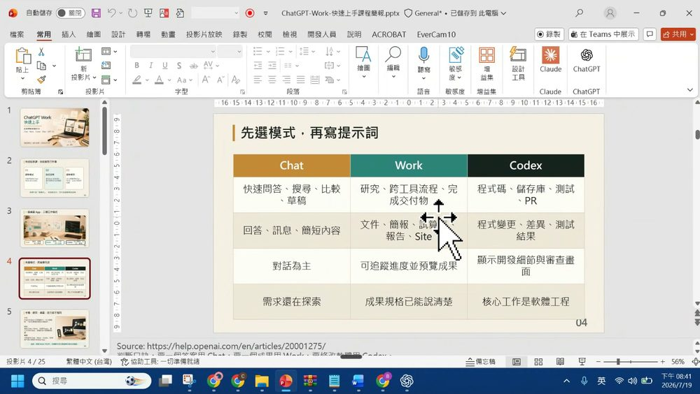
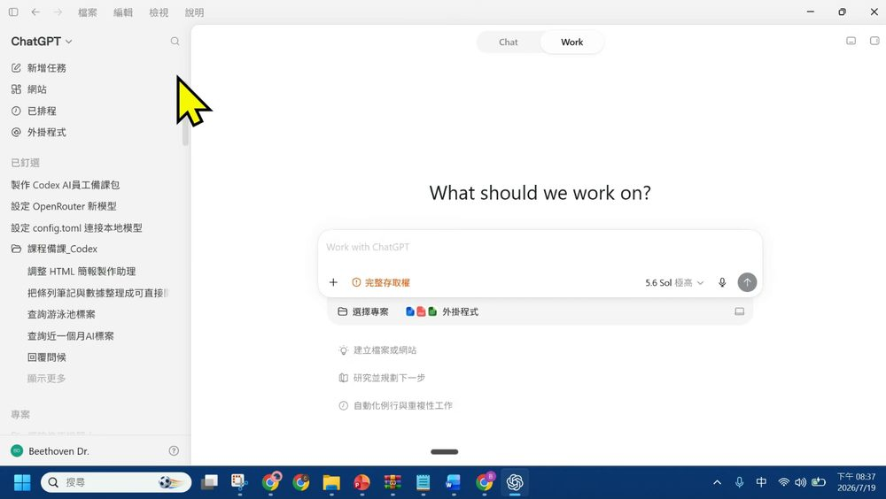
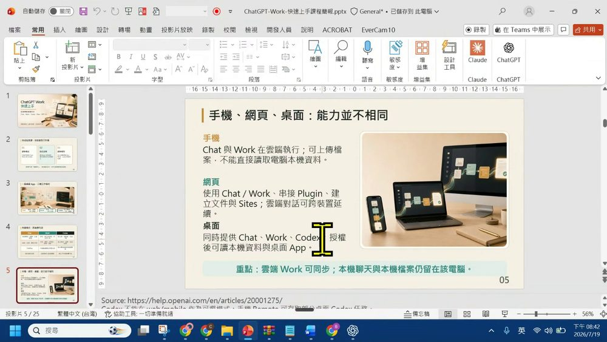
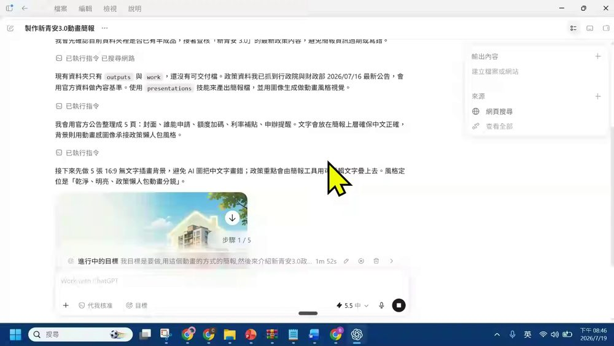
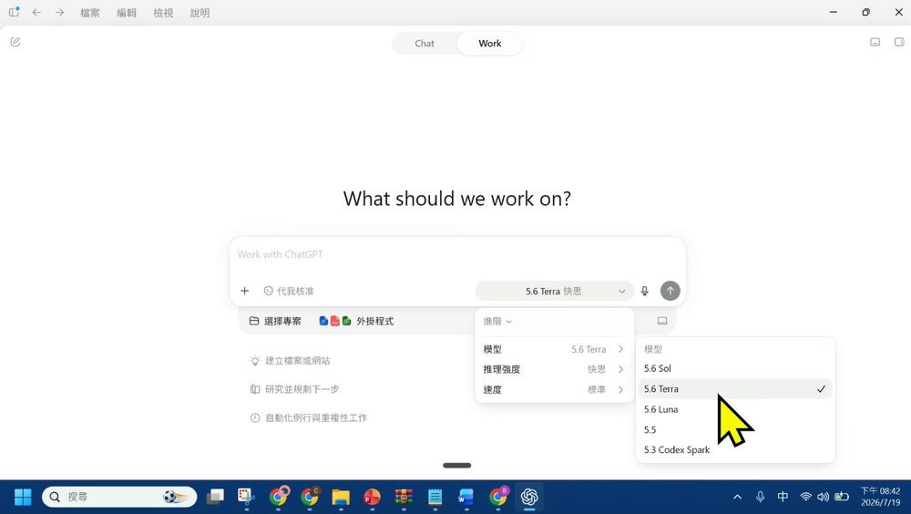
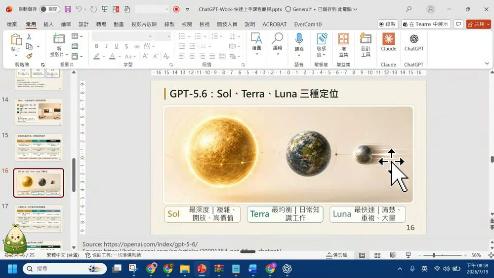
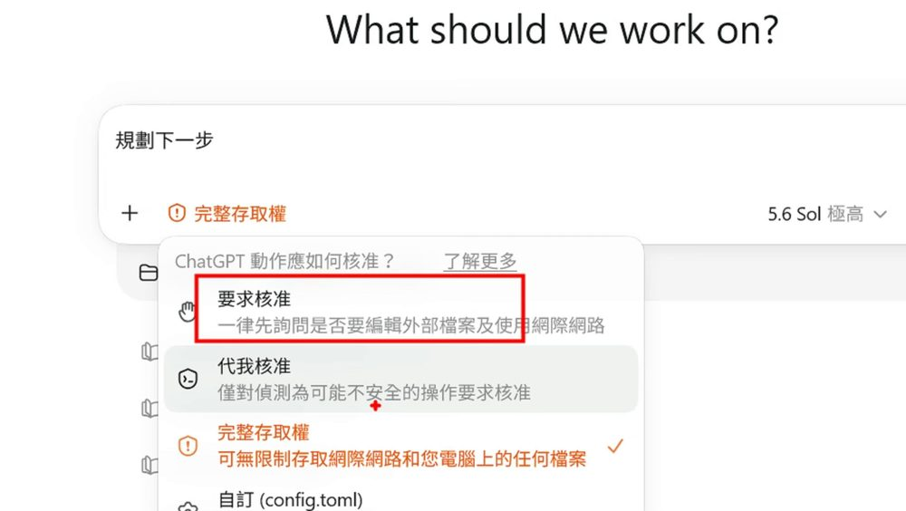
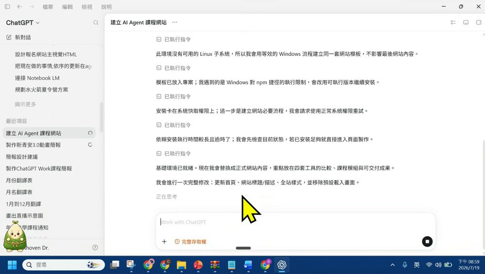

0. 課程資訊與教材
| 課程名稱 | EP46_「抽絲剝繭談 ChatGPT Work」（ChatGPT Work 快速上手：從提問到完整交付） |
|---|---|
| 頻道 | 生成式 AI 應用電台・晨學講堂 |
| 直播日期 | 2026/07/19（六）20:17 CST；錄影全長 37:09 |
| 教學結構 | 簡報導讀＋現場實作 00:00–33:00；課末問答與年中共學預告 33:00–37:09（Google Meet 約 235–246 人在線） |
| 一句話先懂 | ChatGPT 桌面新版把 Chat（聊天）／Work（交付成果）／Codex（寫程式）放進同一個 App。其中 Work 是「目標式代理」——你說「完成後交給我一份⋯⋯」，它就自己規劃步驟、查資料、開工具、產出檔案，過程中你可以補料、改方向、核准動作。 |
| 示範案例 | 全程以「新青安 3.0 政策懶人包」當範例：一句語音目標 → Work 自動查行政院／財政部公告 → 生 5 張 16:9 動畫背景 → 疊上可編輯中文 → 16 分鐘交付 5 頁 PPTX；再示範改字型、生資訊圖表、用 Sites 建「AI Agent 課程網站」。 |
🎬 錄影回放（可直接播放）
1. 一頁看懂全課程
官方簡報第 2 頁就把整堂課的三個學習目標寫死了：①選對模式 ②跑完流程 ③選對模型。老師照這條線走——先分清三種模式，再現場用 Work 把一個目標「跑成一份可交付的檔案」，最後講模型與權限。金句：「目標不是『會聊天』，而是能交付一份可直接使用的成果。」
2. 逐幀時間軸（37 分鐘全程）
每一列都是親眼逐幀判讀的實錄；點各章節看該段詳細筆記與截圖。
| 時間 | 畫面／工具 | 發生了什麼 |
|---|---|---|
| 00:00 | 簡報 · 封面 | 開場破題：ChatGPT 的 Work 到底在哪、跟 Claude 的 Code／Work 很像？老師說「借在聊天與 Codex 中間」，中間可選 Sol／Terra／Luna 模型。 |
| 00:45 | 簡報 p3 · 三模式 | 一個桌面 App，三種工作模式：Chat（問答・搜尋・腦力激盪）／Work（研究・分析・交付成果）／Codex（程式開發・測試・審查）。 |
| 01:00 | 紅筆手寫 | 老師在 Work↔Codex 之間畫括弧，手寫「Agent」——這兩個才是「會自己動手」的代理模式。 |
| 02:45 | 桌面 App | 頂部「Chat｜Work」切換；Chat 問「今天想聊些什麼？」切到 Work 變「What should we work on?」。 |
| 03:00 | Work 首頁 | Work 輸入框「Work with ChatGPT」、完整存取權、模型 5.6 Sol 極高、選擇專案、外掛程式；三個建議：建立檔案或網站／研究並規劃下一步／自動化例行工作。 |
| 06:00 | 權限選單 | ChatGPT 動作應如何核准？三選項：要求核准／代我核准／完整存取權（＋自訂 config.toml）。 |
| 07:00 | 簡報 p4–p6 | 三欄比較表（適用情境／產出／介面／何時用）；手機・網頁・桌面能力不同；Work 的關鍵不是回答，而是交付成果。 |
| 08:00 | 模型選單 | 展開模型：5.6 Sol／Terra（快思）／Luna、5.5、5.3 Codex Spark；進階可調推理強度（快思／中）與速度（標準／快速）。 |
| 09:15 | Work · 下目標 | 用語音下目標：「用動畫方式的簡報介紹新青安 3.0 政策，作為政策懶人包，簡報 5 頁（image2.0）」，命名「製作新青安 3.0 動畫簡報」，設為目標。 |
| 10:15 | Work · 規劃 | Work 自動列出5 個步驟並開始跑（步驟 1/5）；右側面板「輸出內容／來源」。 |
| 10:30 | Work · 執行 | 自動網頁搜尋 → 抓行政院財政部 2026/07/16 公告；決定用 presentations 技能產 PPTX、先做 5 張 16:9 無文字背景（避免 AI 把中文畫錯），文字用簡報工具疊上。 |
| 12:30 | Meet 聊天室 | 使用者補條件：「文字部分，請使用標楷體、字型大小最少 24 號字」；助理回覆會全用標楷體、最小 24pt。 |
| 17:30 | Work · 建檔 | 5 張背景齊 → 複製到工作區、建 5 頁 PowerPoint、加來源註記與可編輯中文。 |
| 17:45 | Work · Sites | 另開一個 Work：用 Sites 建「AI Agent 課程網站」（介紹 Codex／Opencode／Claude Code／Antigravity 四工具）。 |
| 21:00 | 設定 · 寵物 | 示範寵物設定：粽寶／收音機寵物／Codex 等，寵物會管理對話串並提示需注意事項；demo 選「簡報鴞」。 |
| 24:45 | 簡報 p14–p17 | Sites 三步驟、發布前的方案／區域／資料邊界、三模型比較（Sol／Terra／Luna）。 |
| 26:45 | 成果 · 交付 | 「製作新青安 3.0 動畫簡報」完成：下載 5 頁 PPTX、用時約 16 分鐘；檔名「新青安3.0政策懶人包_5頁動畫風格.pptx（7,311KB）」。 |
| 27:45 | 改稿 demo | 「把全部的字改成微軟正黑體」 → 拆 3 任務（掃描字型／套用微軟正黑體字級≥24pt／檢查文字溢位）；再追加「生一頁台北 101 風格資訊圖表」。 |
| 32:00 | 成果 · 網站 | 「AI Agent 課程網站」完成：保存上傳供 Sites 發布；推送被 Git 安全檢查擋（執行身分不同）→ 加安全例外續發。 |
| 35:44 | Portaly 課程頁 | 年中共學預告：7/22 簡報工具（6 種）、7/23 Copilot×Power Automate、7/24 手機遙控 Claude Code；5 場 300 分鐘、5 份講義。 |
| 36:00 | Meet · Q&A | 問答：Work 要先指定專案夾嗎？寵物設定提示詞？GPT for PPT 怎麼安裝？LINE 社群＋Portaly 連結；謝謝老師。 |
3. 三種模式：Chat／Work／Codex
很多人一打開新版 ChatGPT 就問「Work 到底在哪？」老師的答案：它跟 Chat、Codex 一起被放進同一個桌面 App，你要先分清楚「這件事要一個答案、一份成果、還是改一段程式」，再決定進哪個模式。
3.1 一個桌面 App，三種工作模式

| 模式 | 適用 | 產出 | 什麼時候用 |
|---|---|---|---|
| Chat | 快速問答、搜尋、比較、草稿 | 回答、訊息、簡短內容 | 需求還在探索、要來回討論 |
| Work | 研究、跨工具流程、完成交付物 | 文件、簡報、試算表、報告、Site | 成果規格已能說清楚、要一份可交付檔 |
| Codex | 程式碼、儲存庫、測試、PR | 程式變更、差異、測試結果 | 核心工作是軟體工程 |
3.2 Work＋Codex＝Agent：會「動手」的兩個模式

- Chat 產生一個「可讀的回答」，通常以文字為終點、由你主導下一步；速度快、適合來回討論。
- Work 把目標「跑成可審核的成果」：先規劃、再找資料與操作工具，能建立文件／簡報／試算表／Sites，途中可補資料、改方向、核准動作。官方定義它是 outcome-oriented agent（目標導向代理）。
- Codex 專攻軟體工程，會顯示開發細節與審查畫面。Work 與 Codex 都屬於「Agent 類」——差別在一個交付「辦公成果」、一個交付「程式變更」。
- 邊界（官方簡報 p5 附註）：Codex 不能在網頁／手機當可選模式；手機 Remote 只能存取「部分桌面 Codex 任務」。
3.3 手機、網頁、桌面：能力並不相同

| 裝置 | 能做什麼 |
|---|---|
| 手機 | Chat 與 Work 在雲端執行；可上傳檔案，不能直接讀取電腦本機資料。 |
| 網頁 | 用 Chat／Work、串接 Plugin、建立文件與 Sites；雲端對話可跨裝置延續。 |
| 桌面 | 同時提供 Chat／Work／Codex；授權後可讀本機資料與桌面 App。 |
4. Work 目標式交付（新青安 3.0 實戰）
這是本集的重頭戲：老師只講一句「目標」，讓 Work 自己把一份「新青安 3.0 政策懶人包」動畫簡報從無到有做出來——過程全程可見、可補料、可改方向，最後 16 分鐘交出 5 頁 PPTX。
4.1 給「目標」，不是給「問題」

老師示範的下指令方式，正好對應官方簡報 p9 的「好提示詞＝結果＋脈絡＋來源＋限制＋驗收」五欄公式：
| 欄位 | 意義 | 本次示範對應 |
|---|---|---|
| 結果 | 要交付什麼？給誰用？ | 新青安 3.0 政策懶人包簡報 |
| 脈絡 | 背景、目的、已知決策 | 動畫風格、給一般民眾看的懶人包 |
| 來源 | 檔案、連結、資料範圍 | 行政院／財政部官方公告 |
| 限制 | 頁數、格式、語氣 | 5 頁、image2.0、後補「標楷體、字級≥24」 |
| 驗收 | 數字、版面、缺口 | 共 5 頁、無文字超出版面、依官方公告 |
4.2 五步驟自動規劃：它先想好再動手
下完目標後，Work 沒有立刻生圖，而是先把任務拆成 5 個可驗收的步驟再逐一執行——這正是它跟「聊天」最大的差別。實際跑出的步驟：
- 盤點現有檔案素材（先看資料夾有沒有半成品）
- 查核新青安 3.0 政策重點（自動網頁搜尋官方公告）
- 規劃 5 頁動畫懶人包腳本
- 產出 5 頁 Image 2.0 圖像（先背景、後疊字）
- 整理交付檔並驗證（頁數、版面、來源）
4.3 查公告、做背景、疊上可編輯文字
- 先背景、後文字是關鍵手法：AI 生圖容易把中文寫成亂碼，所以讓它只畫「16:9 無文字插畫背景」，再用簡報工具把可編輯的中文疊上去——版面乾淨、文字也不會錯。
- 資料要有出處：Work 自己去查行政院／財政部 2026/07/16 公告，每頁附上「資料來源」註記；老師強調只改版面、不改政策內容。
- 途中可加條件：學員在 Meet 聊天室補「標楷體、字級≥24」，Work 立刻把它納入後續步驟——這就是官方講的 steer（中途導引）。
4.4 16 分鐘交付，再一句話改稿
官方簡報 p13 提醒：產出不是終點，交付後要看三件事，改稿時用「精準修正句型」把漂移降到最低——
| 檢查 | 問自己 |
|---|---|
| 正確 | 數字、姓名、日期、引文與來源是否一致？ |
| 完整 | 是否覆蓋原始需求、必要章節與例外情況？ |
| 可用 | 字級、版面、公式、連結與檔案格式是否可交付？ |
5. 選對模型：Sol／Terra／Luna
GPT-5.6 之後模型命名變了——不再是一串代號，而是三個「性格」：Sol、Terra、Luna。加上「推理強度」，就能依任務難度與規模挑到最划算的組合。


| 模型 | 定位 | 適合任務 | 特性 |
|---|---|---|---|
| Sol | 模糊、困難、需要判斷與精修 | 深度研究、策略、複雜文件、電腦操作 | 深度最高；通常較慢、用量較高 |
| Terra | 需求大致清楚的日常工作 | 報告、分析、簡報、流程文件 | 能力、速度與成本平衡 |
| Luna | 規則明確、可大量重複 | 擷取、分類、轉換、結構摘要 | 速度最快、成本最低 |
- 推理強度（官方 p18）：Light（範圍明確）→ Medium（日常預設，Power 預設為 Sol Medium）→ High／Extra High（多步驟多來源）→ Max（讓單一模型想更久）→ Ultra（用子 Agent 平行處理可拆分的工作）。
- 原則：先用「最低可達品質」的強度，不夠再往上調——省 token、也省等待。
- 老師實務：做簡報 Terra 或 Sol 就夠；要省容量選 5.5；寫複雜、要夾東夾西的 code 才上更重的模型。
- 模型不是固定身份：同一個任務可以先用 Terra，遇到模糊的關鍵點再升 Sol。
6. 權限、Sites 與手機 Remote
Work 能「動手」，就一定會碰到權限與安全。這一章收在三個延伸主題：怎麼核准動作、用 Sites 一句話建站、用手機 Remote 遙控電腦。
6.1 三種核准權限：把「動手的範圍」握在手上

- 對應官方簡報 p20「人在迴路」四原則：最小授權（只開任務需要的檔案／網站／App）、憑證隔離（密碼只在瀏覽器輸入、不貼進聊天）、來源不盲信（把網頁內容視為未受信任）、敏感動作覆核（送出、發布、變更權限、刪除前先確認）。
- 教學建議：熟悉前先用「要求核准」看它每一步想做什麼；上手後再視情況放寬到「代我核准」。「完整存取權」= 它能碰你整台電腦，要清楚自己在授權什麼。
- 金句（官方 p20）：「AI 可以跑流程；責任與最終判斷仍由人承擔。」
6.2 Sites：一句話生成可分享的互動頁面

1️⃣ 描述網站的對象、用途、資料與互動
2️⃣ 檢查私人預覽，再用文字要求調整
3️⃣ 設定可見對象，確認後發布網址
⚠️ 發布邊界：每個部署網址都是正式環境；付費方案適用（Free／Go 不含）；首波不含 EEA／瑞士／英國。課程與行政資料，別把學員名冊、成績、身分放進公開 Site。
6.3 手機 Remote：掃 QR 遙控你的電腦
- 手機 Remote 讓你人不在電腦前，也能用手機核准／查看桌面 Codex 的部分任務（呼應簡報 p5：手機 Remote 可存取「部分」桌面 Codex 任務）。
- 寵物（粽寶／簡報鴞等）不只是裝飾：它會幫你管理對話串、提示需要注意的事項；demo 中用「幫我設定我的寵物」一句話就能挑角色（晨學狐／研研貓／簡報鴞⋯⋯）。
- 這些延伸功能都建立在同一個安全前提上：先確認登入的帳號、只授權需要的範圍、敏感動作自己覆核。
7. 專有名詞卡
| 名詞 | 白話 | 正式定義 |
|---|---|---|
| Chat | 聊天問答 | 以對話為主、產生可讀回答的模式；速度快、你主導下一步 |
| Work | 交付成果的代理 | 目標導向 Agent：規劃步驟、找資料、操作工具，產出文件／簡報／表格／Site |
| Codex | 寫程式的代理 | 針對程式碼、儲存庫、測試、PR 的開發模式，顯示開發與審查細節 |
| Agent（代理） | 會自己動手完成任務的 AI | 結合模型、指令、工具、來源與執行迴圈；Work 與 Codex 皆屬此類 |
| Sol／Terra／Luna | 深／均衡／快 三種模型 | GPT-5.6 的三種定位：Sol 最深、Terra 最平衡、Luna 最快最省 |
| 推理強度 | 讓 AI 想多久 | Light→Medium→High／Extra High→Max→Ultra；Ultra 用子 Agent 平行處理 |
| Sites | 一句話生成網站 | 由描述生成可分享互動頁面，先私人預覽、再設可見對象發布 |
| Plugin／App | 技能包／外部連接 | Plugin 打包可重複工作流程與技能；App 連接 Drive／Gmail／Slack 等資料與動作 |
| Remote | 手機遙控電腦 | 以 QR 配對，讓手機核准／存取桌面上部分 Codex 任務 |
| 完整存取權 | 放行 AI 碰整台電腦 | 核准層級之一：可無限制存取網際網路與本機任何檔案（相對「要求核准／代我核准」） |
| 寵物（粽寶等） | 對話小管家 | 管理對話串、提示需注意事項的桌面角色，可自訂 |
| image2.0 | 新版生圖 | 本集用來生成 16:9 動畫風格背景的圖像生成能力 |
8. 課後自我檢核（照本集實作）
都對應本集真的示範過的動作與官方簡報要點。可到互動技能地圖逐項打勾。
| 主題 | 你應該做得到… |
|---|---|
| 🧭 三模式 | ① 說出 Chat／Work／Codex 各自的產出與時機 ② 解釋為什麼 Work＋Codex 才叫 Agent ③ 知道手機／網頁／桌面能力不同（本機資料只有桌面授權後能讀） |
| 🎯 目標交付 | ① 用「結果＋脈絡＋來源＋限制＋驗收」五欄寫一個 Work 目標 ② 看懂它「先規劃步驟再動手」 ③ 懂「先生無字背景、再疊可編輯文字」避免中文亂碼 ④ 交付後用精準修正句型改稿 |
| 🧠 選模型 | ① 依難度／規模選 Sol／Terra／Luna ② 調對推理強度（先低再往上） ③ 知道同一任務可先 Terra 再升 Sol |
| 🔐 權限延伸 | ① 分清要求核准／代我核准／完整存取權 ② 用 Sites 三步驟建站並記得發布邊界（別放個資） ③ 知道手機 Remote 與寵物的用途 ④ 記得「送出／發布」由人按 |
9. 資料來源與製作說明
- 原始教材：EP46「抽絲剝繭談 ChatGPT Work」課堂錄影（37:09）＋官方課程簡報《ChatGPT-Work-快速上手課程簡報.pptx》（25 頁，資料更新 2026.07.19）。
- 逐幀製作方式：下載完整錄影 → ffmpeg 依節點時間碼與場景變化抽出畫面 → 親眼逐幀判讀每個操作畫面（Chat／Work 切換、模型選單、新青安簡報生成、PowerPoint 檢視、Sites 建站、Remote QR）→ 裁切成 17 張真實截圖嵌入本頁；並對照課堂逐字稿與簡報原文，引號內文字取自逐字稿、畫面可辨識文字或官方簡報。
- 官方引用來源（簡報標註）：ChatGPT Work and Codex（help.openai.com/articles/20001275）、GPT-5.6 in ChatGPT（20001354）、GPT-5.6 發表頁（openai.com/index/gpt-5-6）、Creating and managing ChatGPT Sites（20001339）、Plugins（20001256）、Built-in browser（20001277）。政策數據（新青安 3.0）以簡報引用之行政院、財政部 2026/07/16 公告為準。
- 誠實聲明：本頁內容以錄影實際發生的順序與畫面為準。逐字稿由語音辨識產生、偶有錯字（如工具名、模型名），已依畫面與官方簡報校正後採用；示範中的「16 分鐘」「7,311KB」「步驟 1/5」等數字均取自畫面實際顯示。新青安 3.0 政策細節為課程簡報示範內容，實際申辦請以主管機關最新公告為準。
- 介面參考：互動技能地圖頁沿用本站 EP44／EP45 的卡片式多層導覽與遊戲化進度設計。